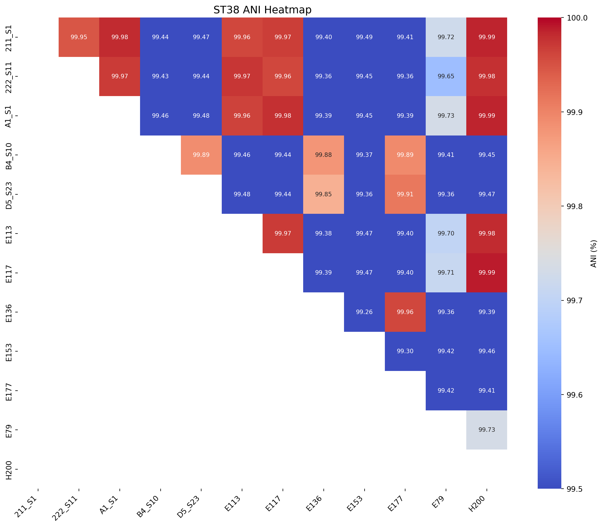
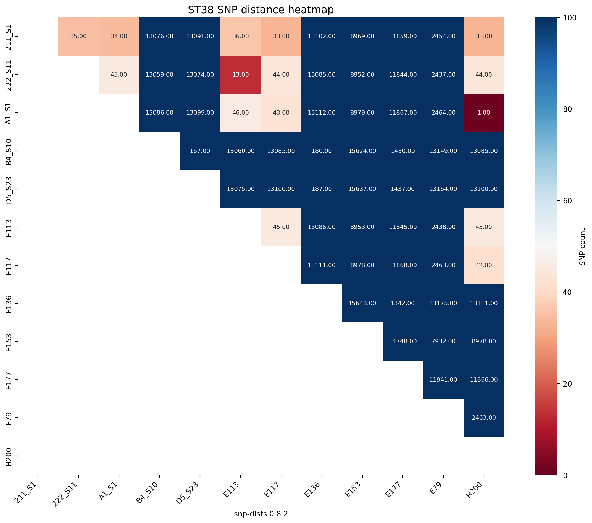
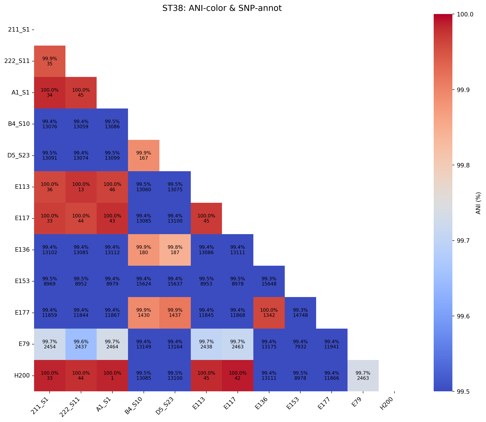
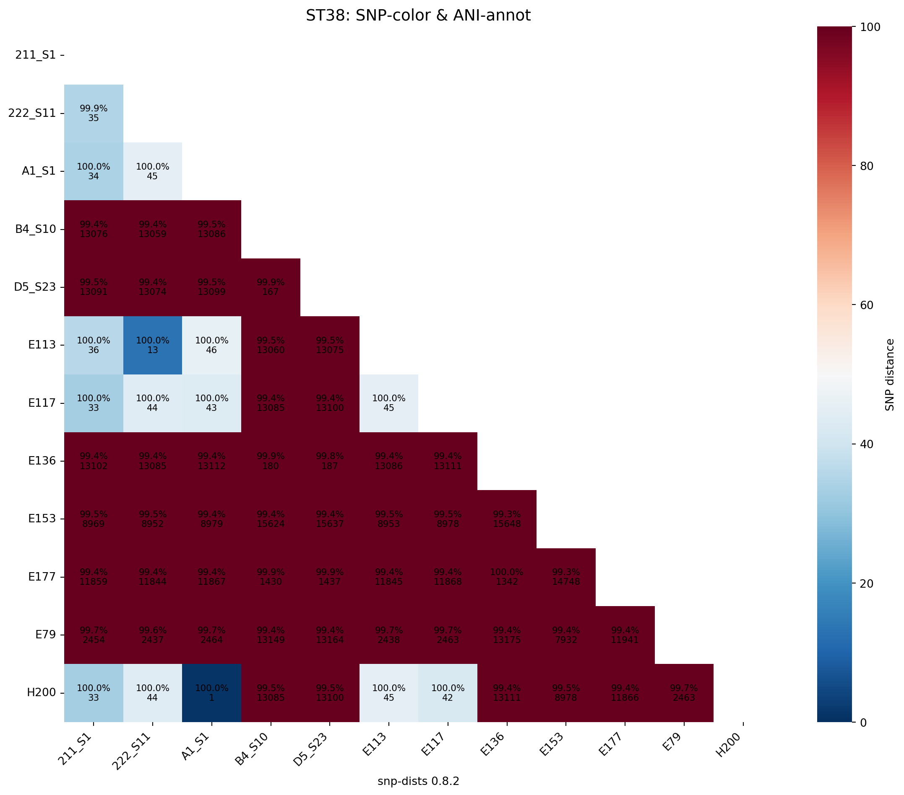
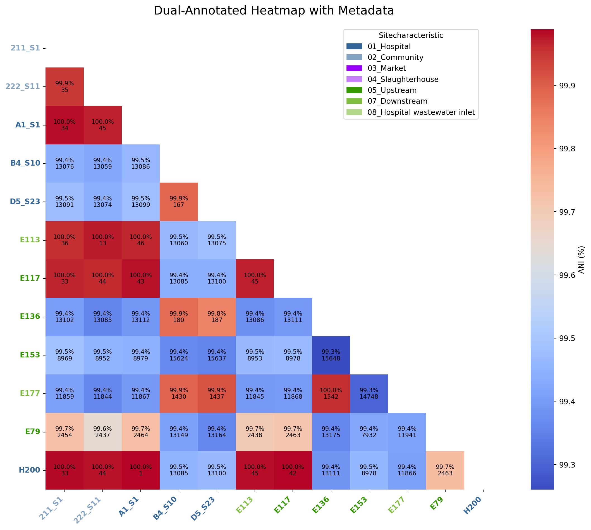

# Install libraries as necessary
#pip install openpyxl
#pip install pandas
#pip install matplotlib
#pip install seaborn
#pip install numpy
#import importlib.metadataANI and SNP distance matrices for specific STs
Introduction
This tutorial will take n genome sequences and run algorithms to determine average nucleotide idenitities (ANI) and core genome single nucleotide polymorphisms (SNPs), visualising the distances as heatmaps in python.
This workflow uses fastANI for ANI, snippy and snp-dists for SNP distances, and seaborn and matplotlib in python to visualise the distances as heatmaps. For any analysis in bash it uses the conda package manager so make sure you have that installed.
Part 1 - Seperating genomes into ST
First use cat to create a accessions.txt file
cat > ST38_seqs.txtType your accessions directly into the terminal, or alternately copy and paste these to follow this example:
E84
E98
E141
E158
E165
A45Type Ctrl + D to save and exit
You now have an accessions.txt containing the accessions you want to download.
Check the contents
cat ST38_seqs.txtOnce you are happy with the accessions in your accessions.txt file, type the following command:
mkdir ST38_seqs
cat ST38_seqs.txt | parallel ls all_assemblies_pilon/{}.fasta
cat ST38_seqs.txt | parallel cp all_assemblies_pilon/{}.fasta ST38_seqs
ls ST38_seqsPart 2 - ANI matrix
2.1 - Calculating ANI with bash
We will be using fastANI with bioconda to determine ANI values for all of genomes compared against each other.
# conda create -n ANI_SNP_dists -y python=3.8
conda activate ANI_SNP_dists
conda install bioconda::fastaniCreate a list of fasta genomes to determine ANI
ls ST38_seqs/*.fasta > ST38_seqs/ST38_fastas.txtCheck the list
cat ST38_seqs/ST38_fastas.txtFor ANI of all vs all run fastANI with all the genomes in your list.
Choosing the --matrix flag will output a matrix, this is what we will use to plot the heatmap
fastANI --ql ST38_seqs/ST38_fastas.txt --rl ST38_seqs/ST38_fastas.txt -o ST38_seqs/ST38_ANI.tsv --matrixRename the output matrix
cp ST38_seqs/ST38_ANI.tsv.matrix ST38_seqs/ST38_ANI_matrix.tsv
2.2 - Visualising ANI matrix with python
2.2.1: Install libraries
Next load the libraries
import pandas as pd
import matplotlib.pyplot as plt
import matplotlib as mpl
import matplotlib.patches as mpatches
import seaborn as sns
import numpy as np
from matplotlib.colors import to_rgb
from matplotlib.gridspec import GridSpec2.2.2: Convert triangular matrix to full square matrix
Firstly we will covert the traingular matrix produced from fastANI to a full square matrix
# Load the file
with open("../data/ST38_ANI_matrix.tsv", "r") as f:
lines = f.readlines()
# Skip the first line (header)
lines = lines[1:]
# Strip whitespace
lines = [line.strip() for line in lines if line.strip()]
# Extract strain names from the leftmost column
strain_names = []
values = []
for line in lines:
parts = line.split("\t")
strain_names.append(parts[0])
values.append([float(x) for x in parts[1:]])
n = len(strain_names)
ani_matrix = np.zeros((n, n))
# Fill the lower triangle
for i in range(n):
for j in range(len(values[i])):
ani_matrix[i, j] = values[i][j]
ani_matrix[j, i] = values[i][j]
# Fill the diagonal with 100s
np.fill_diagonal(ani_matrix, 100)
# Create DataFrame
ani_df_ST38 = pd.DataFrame(ani_matrix, index=strain_names, columns=strain_names)
# Remove ".fasta" from column names
ani_df_ST38.columns = ani_df_ST38.columns.str.replace("ST38_seqs/", "")
ani_df_ST38.columns = ani_df_ST38.index.str.replace(".fasta", "")
# Remove ".fasta" from index names
ani_df_ST38.index = ani_df_ST38.index.str.replace("ST38_seqs/", "")
ani_df_ST38.index = ani_df_ST38.index.str.replace(".fasta", "")
# Display to confirm
print(ani_df_ST38.head())
# Remove ".fasta" from column names
ani_df_ST38.columns = ani_df_ST38.columns.str.replace("ST38_seqs/", "")
ani_df_ST38.columns = ani_df_ST38.index.str.replace(".fasta", "")
# Display to confirm
print(ani_df_ST38.head())
ani_df_ST38.to_csv("../tbls/ST38_ANI_matrix_indonesia_trycycle.csv", # path (and name) of the file to write
sep=",", # delimiter ("," by default)
index=False, # don’t write row numbers (like R’s row.names = FALSE)
header=True, # write out column names
encoding="utf-8" # file encoding
) ST38_seqs/211_S1 ST38_seqs/222_S11 ST38_seqs/A1_S1 \
211_S1 100.000000 99.947029 99.982414
222_S11 99.947029 100.000000 99.970627
A1_S1 99.982414 99.970627 100.000000
B4_S10 99.440842 99.426079 99.460754
D5_S23 99.473862 99.444626 99.477219
ST38_seqs/B4_S10 ST38_seqs/D5_S23 ST38_seqs/E113 ST38_seqs/E117 \
211_S1 99.440842 99.473862 99.960251 99.966888
222_S11 99.426079 99.444626 99.973358 99.960297
A1_S1 99.460754 99.477219 99.963959 99.977356
B4_S10 100.000000 99.889023 99.462616 99.440575
D5_S23 99.889023 100.000000 99.476875 99.442474
ST38_seqs/E136 ST38_seqs/E153 ST38_seqs/E177 ST38_seqs/E79 \
211_S1 99.403992 99.486908 99.410881 99.724228
222_S11 99.357895 99.453064 99.361801 99.649956
A1_S1 99.388702 99.448425 99.394821 99.730743
B4_S10 99.879967 99.367264 99.894257 99.411072
D5_S23 99.845367 99.357643 99.913948 99.360580
ST38_seqs/H200
211_S1 99.985268
222_S11 99.977982
A1_S1 99.986038
B4_S10 99.453735
D5_S23 99.467850
211_S1 222_S11 A1_S1 B4_S10 D5_S23 \
211_S1 100.000000 99.947029 99.982414 99.440842 99.473862
222_S11 99.947029 100.000000 99.970627 99.426079 99.444626
A1_S1 99.982414 99.970627 100.000000 99.460754 99.477219
B4_S10 99.440842 99.426079 99.460754 100.000000 99.889023
D5_S23 99.473862 99.444626 99.477219 99.889023 100.000000
E113 E117 E136 E153 E177 E79 \
211_S1 99.960251 99.966888 99.403992 99.486908 99.410881 99.724228
222_S11 99.973358 99.960297 99.357895 99.453064 99.361801 99.649956
A1_S1 99.963959 99.977356 99.388702 99.448425 99.394821 99.730743
B4_S10 99.462616 99.440575 99.879967 99.367264 99.894257 99.411072
D5_S23 99.476875 99.442474 99.845367 99.357643 99.913948 99.360580
H200
211_S1 99.985268
222_S11 99.977982
A1_S1 99.986038
B4_S10 99.453735
D5_S23 99.467850 2.2.3: Write a function to create the ANI heatmaps
Next we write a function which masks half the dataset to create a triangular heatmap, with the added functionality of rotating the heatmap
def plot_ani_heatmap(df, title="ANI Heatmap", rotation=0, lower_legend=95, upper_legend=100):
# Make a copy to avoid modifying the original
df_plot = df.copy()
# Apply rotation first
if rotation == 90:
df_plot = df_plot.transpose()
elif rotation == 180:
df_plot = df_plot.iloc[::-1, ::-1]
elif rotation == 270:
df_plot = df_plot.iloc[::-1, ::-1].transpose()
mask = np.zeros_like(df_plot, dtype=bool)
mask[np.triu_indices_from(mask, k=0)] = True # k=1 excludes the diagonal
if rotation == 90 or rotation == 270:
mask = np.transpose(mask)
elif rotation == 180:
mask = np.flip(mask)
plt.figure(figsize=(12, 10))
sns.heatmap(
df_plot,
annot=True,
fmt=".2f",
mask=mask,
cmap="coolwarm",
vmin=lower_legend,
vmax=upper_legend,
annot_kws={"size": 8},
xticklabels=df_plot.columns,
yticklabels=df_plot.index,
cbar_kws={"label": "ANI (%)"}
)
plt.xticks(fontsize=10, rotation=45, ha="right")
plt.yticks(fontsize=10)
plt.title(title, fontsize=14)
plt.tight_layout()
plt.show()2.2.4: Create the ANI heatmap
We will produce an ANI matrix for E. coli species types @Ec-ANI
# Call the function to create the heatmap
plot_ani_heatmap(df=ani_df_ST38, title="ST38 ANI Heatmap", rotation =90, lower_legend=99.5, upper_legend=100)
Rodriguez et. al (2024) analysed 18,123 genomes to determine where the thresholds lay which distinguished certain taxonomic ranks:
same species - 95% same sequence type - 99.5% same strain - 99.9%
2.2.5: Write a function to create the ANI heatmaps and save
Next we write a function which masks half the dataset to create a triangular heatmap, with the added functionality of rotating the heatmap
def save_ani_heatmap(df, title="ANI Heatmap", rotation=0, lower_legend=95, upper_legend=100, output_file_png = "ani_heatmap_from_table_A_Z.png", output_file_svg = "ani_heatmap_from_table_A_Z.svg"):
# Make a copy to avoid modifying the original
df_plot = df.copy()
# Apply rotation first
if rotation == 90:
df_plot = df_plot.transpose()
elif rotation == 180:
df_plot = df_plot.iloc[::-1, ::-1]
elif rotation == 270:
df_plot = df_plot.iloc[::-1, ::-1].transpose()
mask = np.zeros_like(df_plot, dtype=bool)
mask[np.triu_indices_from(mask, k=0)] = True # k=0 excludes the diagonal
if rotation == 90 or rotation == 270:
mask = np.transpose(mask)
elif rotation == 180:
mask = np.flip(mask)
plt.figure(figsize=(12, 10))
sns.heatmap(
df_plot,
annot=True,
fmt=".2f",
mask=mask,
cmap="coolwarm",
vmin=lower_legend,
vmax=upper_legend,
annot_kws={"size": 8},
xticklabels=df_plot.columns,
yticklabels=df_plot.index,
cbar_kws={"label": "ANI (%)"}
)
plt.xticks(fontsize=10, rotation=45, ha="right")
plt.yticks(fontsize=10)
plt.title(title, fontsize=14)
plt.tight_layout()
plt.savefig(output_file_png, dpi=300) # Save the heatmap
plt.savefig(output_file_svg, format="svg", dpi=300)
print(f"Heatmap saved to {output_file_png}")
print(f"Heatmap saved to {output_file_svg}")
plt.show()2.2.4: Save the ANI heatmap
# ST38
save_ani_heatmap(df=ani_df_ST38, title="ST38 ANI Heatmap", output_file_png="../imgs/ani_heatmap_for_ST38_trycycle.png", output_file_svg="../imgs/ani_heatmap_for_ST38_trycycle.svg", rotation=90, lower_legend=99.5, upper_legend=100)Heatmap saved to ../imgs/ani_heatmap_for_ST38_trycycle.png
Heatmap saved to ../imgs/ani_heatmap_for_ST38_trycycle.svgDetermine the sample with the highest associations across all samples i.e. the most interconnected sample - we will use this for the reference for snippy
# Replace diagonal with NaN so self-comparisons don't inflate the result
ani_df_ST38_no_diag = ani_df_ST38.copy()
for i in ani_df_ST38_no_diag.index:
ani_df_ST38_no_diag.loc[i, i] = None
# Calculate the average ANI to other samples for each sample
mean_ani_ST38 = ani_df_ST38_no_diag.mean(axis=1) # row-wise mean
# Sort to find the sample with the highest connectivity
most_connected_ST38 = mean_ani_ST38.sort_values(ascending=False)
# Show top 5 most interconnected samples
print("Most interconnected samples in ST38 based on mean ANI:")
print(most_connected_ST38.head())Most interconnected samples in ST38 based on mean ANI:
H200 99.711721
211_S1 99.707506
A1_S1 99.707369
E113 99.702396
E117 99.701797
dtype: float64Part 3 - SNP distance matrix
3.1 - Calculating SNP distances with bash
We will determine SNP distances with snippy and snp-dists with 9A-1-1 as reference
We will activate the same conda environment used previously in section 2.1.
But here we will add more programs:
3.1.1: Download software
conda activate ANI_SNP_dists
conda install -c conda-forge -c bioconda -c defaults snippy
conda install -c bioconda -c conda-forge snp-dists
conda install bioconda::parallel# Show top 5 most interconnected samples
print("Most interconnected samples in ST38 based on mean ANI:")
print(most_connected_ST38.head())Most interconnected samples in ST38 based on mean ANI:
H200 99.711721
211_S1 99.707506
A1_S1 99.707369
E113 99.702396
E117 99.701797
dtype: float643.1.2: Run Snippy
Use snippy to generate all SNPs.
Set reference file for SNP calculations.
# Change this time
REF=ST38_seqs/H200.fastaUse sed to remove .fastq from .txt file
ls ST38_seqs/*.fasta > ST38_seqs/ST38_fastas.txt
sed 's|ST38_seqs/||g' ST38_seqs/ST38_fastas.txt > ST38_seqs/genome_names_1.txt
sed -e 's/\.fasta.*//' ST38_seqs/genome_names_1.txt > ST38_seqs/genome_names.txtCheck the new .txt file containing list of genome names
cat ST38_seqs/genome_names.txt
cat ST38_seqs/genome_names.txt | parallel ls ST38_seqs/{}.fastaThe we use parallel on our list of genomes to run snippy:
cat ST38_seqs/genome_names.txt | parallel snippy --report --outdir ST38_seqs/{}_snps --ref $REF --ctgs ST38_seqs/{}.fastaThis produces several files:
3.1.3: Run Snippy-core
Use snippy-core from snippy to generate core SNPs
snippy-core --ref $REF --prefix core ST38_seqs/*_snps
# move files
mv *core* ST38_seqs/This produces several files:
core.full.aln: The full core genome alignment in FASTA format.core.aln: The core SNP alignment in FASTA format (only variable sites).core.tab: A table summarizing the SNP differences.
3.1.4: Generate a Pairwise SNP Distance Matrix
Once you have the core SNP alignment (core.aln), use snp-dists to calculate pairwise SNP distances.
snp-dists ST38_seqs/core.aln > ST38_seqs/ST38_snp_matrix.tsvThis will generate a pairwise SNP distance matrix (snp_matrix.tsv) where:
- Rows and columns correspond to isolates.
- The values represent the number of SNP differences between isolates
3.2 - Visualising SNP distance matrix with python
Make sure you have all the required libraries installed, if you need to install them see section 2.2.1
3.2.1: Read and clean the data
# Read the SNP matrix with first column as row index
snp_df_ST38 = pd.read_csv("../data/ST38_snp_matrix.tsv", sep="\t", index_col=0)
# Remove reference file
snp_df_ST38 = snp_df_ST38.drop("Reference", axis=1)
snp_df_ST38 = snp_df_ST38.drop("Reference", axis=0)
# Remove "_snps" from column names
snp_df_ST38.columns = snp_df_ST38.columns.str.replace("_snps", "")
# Remove "_snps" from index names
snp_df_ST38.index = snp_df_ST38.index.str.replace("_snps", "")
# Verify it loaded correctly
print(snp_df_ST38.head()) 211_S1 222_S11 A1_S1 B4_S10 D5_S23 E113 E117 E136 \
snp-dists 0.8.2
211_S1 0 35 34 13076 13091 36 33 13102
222_S11 35 0 45 13059 13074 13 44 13085
A1_S1 34 45 0 13086 13099 46 43 13112
B4_S10 13076 13059 13086 0 167 13060 13085 180
D5_S23 13091 13074 13099 167 0 13075 13100 187
E153 E177 E79 H200
snp-dists 0.8.2
211_S1 8969 11859 2454 33
222_S11 8952 11844 2437 44
A1_S1 8979 11867 2464 1
B4_S10 15624 1430 13149 13085
D5_S23 15637 1437 13164 13100 3.2.2: Create a function which makes a SNP distance heatmap
def create_snp_heatmap(df, title="SNP Heatmap", rotation=0, lower_legend=95, upper_legend=100):
# Make a copy to avoid modifying the original
df_plot = df.copy()
# Apply rotation first
if rotation == 90:
df_plot = df_plot.transpose()
elif rotation == 180:
df_plot = df_plot.iloc[::-1, ::-1]
elif rotation == 270:
df_plot = df_plot.iloc[::-1, ::-1].transpose()
mask = np.zeros_like(df_plot, dtype=bool)
mask[np.triu_indices_from(mask)] = True # k=1 excludes the diagonal
if rotation == 90 or rotation == 270:
mask = np.transpose(mask)
elif rotation == 180:
mask = np.flip(mask)
plt.figure(figsize=(12, 10))
sns.heatmap(
df_plot,
annot=True,
fmt=".2f",
mask=mask,
cmap="RdBu",
vmin=lower_legend,
vmax=upper_legend,
annot_kws={"size": 8},
xticklabels=df_plot.columns,
yticklabels=df_plot.index,
cbar_kws={"label": "SNP count"}
)
plt.xticks(fontsize=10, rotation=45, ha="right")
plt.yticks(fontsize=10)
plt.title(title, fontsize=14)
plt.tight_layout()
plt.show()3.2.3: Create the SNP distance heatmaps
Next we will produce an SNP distance matrix for E. coli species types @Ec-SNP
# Call the function to create the heatmap
fig_title = "ST38 SNP distance heatmap"
create_snp_heatmap(title=fig_title, df = snp_df_ST38, rotation=90, lower_legend=0, upper_legend=100)
2.2.5: Write a function to create the SNP heatmaps and save
Next we write a function which masks half the dataset to create a triangular heatmap, with the added functionality of rotating the heatmap
def save_snp_heatmap(df, title="SNP Heatmap", rotation=0, lower_legend=95, upper_legend=100, output_file_png = "snp_heatmap_from_table_A_Z.png", output_file_svg = "snp_heatmap_from_table_A_Z.svg"):
# Make a copy to avoid modifying the original
df_plot = df.copy()
# Apply rotation first
if rotation == 90:
df_plot = df_plot.transpose()
elif rotation == 180:
df_plot = df_plot.iloc[::-1, ::-1]
elif rotation == 270:
df_plot = df_plot.iloc[::-1, ::-1].transpose()
mask = np.zeros_like(df_plot, dtype=bool)
mask[np.triu_indices_from(mask, k=0)] = True # k=0 excludes the diagonal
if rotation == 90 or rotation == 270:
mask = np.transpose(mask)
elif rotation == 180:
mask = np.flip(mask)
plt.figure(figsize=(12, 10))
sns.heatmap(
df_plot,
annot=True,
fmt=".0f",
mask=mask,
cmap="RdBu",
vmin=lower_legend,
vmax=upper_legend,
annot_kws={"size": 8},
xticklabels=df_plot.columns,
yticklabels=df_plot.index,
cbar_kws={"label": "Number of SNPs"}
)
plt.xticks(fontsize=10, rotation=45, ha="right")
plt.yticks(fontsize=10)
plt.title(title, fontsize=14)
plt.tight_layout()
plt.savefig(output_file_png, dpi=300) # Save the heatmap
plt.savefig(output_file_svg, format="svg", dpi=300)
print(f"Heatmap saved to {output_file_png}")
print(f"Heatmap saved to {output_file_svg}")
plt.show()2.2.4: Save the SNP heatmap
# ST38
save_snp_heatmap(df=snp_df_ST38, title="ST38 SNP Heatmap", output_file_png="../imgs/snp_heatmap_for_ST38_trycycle.png", output_file_svg="../imgs/snp_heatmap_for_ST38_trycycle.svg", rotation=90, lower_legend=0, upper_legend=100)Heatmap saved to ../imgs/snp_heatmap_for_ST38_trycycle.png
Heatmap saved to ../imgs/snp_heatmap_for_ST38_trycycle.svgPart 4 - Combined ANI and SNP dist matrix
4.1 - Combined ANI and SNP values
def save_dual_annot_heatmap(snp_df,
ani_df,
color_by="ani", # "ani" or "snp"
title="Dual‐Annotated Heatmap",
rotation=0,
lower_legend=None, # if None, auto from data
upper_legend=None,
output_png="dual_heatmap.png",
output_svg="dual_heatmap.svg"):
# 1) Quick sanity checks
assert snp_df.shape == ani_df.shape, "Shapes must match"
assert all(snp_df.index == ani_df.index) and all(snp_df.columns == ani_df.columns)
# 2) Pick the matrix that drives the color
if color_by == "ani":
cmap_df = ani_df
fmt = "{:.2f}%"
cbar_label = "ANI (%)"
elif color_by == "snp":
cmap_df = snp_df
fmt = "{:.0f}"
cbar_label = "SNP distance"
else:
raise ValueError("color_by must be 'ani' or 'snp'")
# 3) Optionally rotate
def _rotate(df, rot):
if rot == 90:
return df.T
elif rot == 180:
return df.iloc[::-1, ::-1]
elif rot == 270:
return df.iloc[::-1, ::-1].T
else:
return df
cmap_df = _rotate(cmap_df, rotation)
ani_df_r = _rotate(ani_df, rotation)
snp_df_r = _rotate(snp_df, rotation)
# 4) Mask upper triangle (optional; remove if you want full matrix)
mask = np.zeros_like(cmap_df, dtype=bool)
mask[np.triu_indices_from(mask, k=0)] = True
# 5) Determine color‐scale bounds
vmin = lower_legend if lower_legend is not None else np.nanmin(cmap_df.values)
vmax = upper_legend if upper_legend is not None else np.nanmax(cmap_df.values)
# 6) Plot!
plt.figure(figsize=(12, 10))
sns.heatmap(
cmap_df,
mask=mask,
cmap="coolwarm" if color_by=="ani" else "RdBu_r",
vmin=vmin,
vmax=vmax,
cbar_kws={"label": cbar_label},
xticklabels=cmap_df.columns,
yticklabels=cmap_df.index,
annot=False
)
# 7) Overlay both ANI and SNP text
for i, row in enumerate(cmap_df.index):
for j, col in enumerate(cmap_df.columns):
if mask[i, j]:
continue
ani_val = ani_df_r.iloc[i, j]
snp_val = snp_df_r.iloc[i, j]
# two‐line text: ANI% on top, SNP below
txt = f"{ani_val:.1f}%\n{snp_val:.0f}"
plt.text(j + 0.5, i + 0.5, txt,
ha="center", va="center",
fontsize=8, color="black")
# 8) Finish touches
plt.title(title, fontsize=14)
plt.xticks(rotation=45, ha="right", fontsize=10)
plt.yticks(rotation=0, fontsize=10)
plt.tight_layout()
plt.savefig(output_png, dpi=300)
plt.savefig(output_svg, format="svg", dpi=300)
plt.show()
print(f"Saved heatmap to {output_png} and {output_svg}")
# Color by ANI, annotate with both ANI+SNP:
save_dual_annot_heatmap(
snp_df=snp_df_ST38,
ani_df=ani_df_ST38,
color_by="ani",
title="ST38: ANI‐color & SNP‐annot",
rotation=90,
lower_legend=99.5, # for the ANI colorbar
upper_legend=100,
output_png="../imgs/ani_and_snp_heatmap_colored_by_ani_ST38.png",
output_svg="../imgs/ani_and_snp_heatmap_colored_by_ani_ST38.svg"
)
# Or, color by SNP distance, annotate with both:
save_dual_annot_heatmap(
snp_df=snp_df_ST38,
ani_df=ani_df_ST38,
color_by="snp",
title="ST38: SNP‐color & ANI‐annot",
rotation=90,
lower_legend=0, # for the SNP colorbar
upper_legend=100,
output_png="../imgs/ani_and_snp_heatmap_colored_by_snp_ST38.png",
output_svg="../imgs/ani_and_snp_heatmap_colored_by_snp_ST38.svg"
)
Saved heatmap to ../imgs/ani_and_snp_heatmap_colored_by_ani_ST38.png and ../imgs/ani_and_snp_heatmap_colored_by_ani_ST38.svg
Saved heatmap to ../imgs/ani_and_snp_heatmap_colored_by_snp_ST38.png and ../imgs/ani_and_snp_heatmap_colored_by_snp_ST38.svg4.2 - Combined ANI and SNP values annotated with metdata
def save_dual_annot_heatmap_with_metadata(
snp_df,
ani_df,
metadata_df,
metadata_col="SiteCharacteristic",
sample_id_col="sample",
color_map=None, # <-- NEW optional argument
color_by="ani",
title="Dual‐Annotated Heatmap with Metadata",
output_png="dual_heatmap_colored.png",
output_svg="dual_heatmap_colored.svg"
):
"""
Generates and saves a dual-annotated heatmap with colored axis labels.
Accepts an optional dictionary to map characteristics to specific colors.
"""
# 1) Quick sanity checks
assert snp_df.shape == ani_df.shape, "Shapes of SNP and ANI dataframes must match"
assert all(snp_df.index == ani_df.index) and all(snp_df.columns == ani_df.columns)
assert sample_id_col in metadata_df.columns, f"'{sample_id_col}' not found in metadata"
assert metadata_col in metadata_df.columns, f"'{metadata_col}' not found in metadata"
# 2) Prepare metadata and create a color map
meta_indexed = metadata_df.set_index(sample_id_col)
heatmap_samples = snp_df.index
if color_map:
# Use the user-provided color map
site_color_map = color_map
# Check if all characteristics in the data have a color mapping
all_sites_in_data = meta_indexed.loc[heatmap_samples, metadata_col].unique()
missing_keys = [site for site in all_sites_in_data if site not in site_color_map]
if missing_keys:
raise ValueError(f"The provided color_map is missing colors for: {', '.join(missing_keys)}")
else:
# No map provided, generate one automatically
unique_sites = meta_indexed.loc[heatmap_samples, metadata_col].unique()
palette = sns.color_palette("hls", len(unique_sites))
site_color_map = dict(zip(unique_sites, palette))
# 3) Pick the matrix that drives the color, mask, and set bounds
cmap_df = ani_df if color_by == "ani" else snp_df
cbar_label = "ANI (%)" if color_by == "ani" else "SNP distance"
cmap_color = "coolwarm" if color_by == "ani" else "RdBu_r"
mask = np.triu(np.ones_like(cmap_df, dtype=bool))
vmin = np.nanmin(cmap_df.values[~mask])
vmax = np.nanmax(cmap_df.values[~mask])
# 4) Set up the plot
fig, ax = plt.subplots(figsize=(13, 10))
sns.heatmap(
cmap_df, mask=mask, cmap=cmap_color, vmin=vmin, vmax=vmax,
annot=False, cbar_kws={"label": cbar_label}, ax=ax
)
# 5) Overlay both ANI and SNP text annotations
for i in range(len(cmap_df.index)):
for j in range(len(cmap_df.columns)):
if mask[i, j]: continue
txt = f"{ani_df.iloc[i, j]:.1f}%\n{int(snp_df.iloc[i, j])}"
ax.text(j + 0.5, i + 0.5, txt, ha="center", va="center", fontsize=8, color="black")
# 6) Apply colors to tick labels
for tick_label in ax.get_yticklabels():
tick_label.set_color(site_color_map[meta_indexed.loc[tick_label.get_text(), metadata_col]])
tick_label.set_weight('bold')
for tick_label in ax.get_xticklabels():
tick_label.set_color(site_color_map[meta_indexed.loc[tick_label.get_text(), metadata_col]])
tick_label.set_weight('bold')
# 7) Add a custom legend for the site colors
legend_patches = [mpatches.Patch(color=color, label=site) for site, color in site_color_map.items()]
ax.legend(handles=legend_patches, title=metadata_col.replace('_', ' ').title(),
bbox_to_anchor=(0.8, 1), loc='upper center', borderaxespad=0.)
# 8) Final touches
ax.set_title(title, fontsize=16, pad=20)
plt.xticks(rotation=45, ha="right")
plt.yticks(rotation=0)
fig.tight_layout(rect=[0, 0, 0.9, 1])
# 9) Save and show
plt.savefig(output_png, dpi=300)
plt.savefig(output_svg, format="svg")
plt.show()
print(f"Heatmap saved to {output_png} and {output_svg}")Now plot the heatmap
# Your metadata
metadata_df = pd.read_csv("../data/site_characteristics.csv", sep=",", index_col=0)
metadata_df = pd.read_csv("/Users/richard.goodman/Library/CloudStorage/OneDrive-LSTM/Github/trycycle-ESBL-E-jakarta/data/site_characteristics.csv", sep=",", index_col=0)
metadata_df['sample_name'] = metadata_df.index
metadata_df = pd.DataFrame(metadata_df, columns=["sample_name", "SiteCharacteristic"])
my_color_map = {
"01_Hospital": "#336699",
"02_Community": "#85a3c2",
"03_Market": "#9900ff",
"04_Slaughterhouse": "#c57fff",
"05_Upstream": "#339900",
"07_Downstream": "#7fbf40",
"08_Hospital wastewater inlet": "#b2d88c"
}
# --- Now, call the updated function ---
save_dual_annot_heatmap_with_metadata(
snp_df=snp_df_ST38,
ani_df=ani_df_ST38,
metadata_df=metadata_df,
metadata_col="SiteCharacteristic", # The column to color by
sample_id_col="sample_name",
color_map=my_color_map, # The column with sample IDs
output_png="../imgs/dual_heatmap_colored_ST38.png",
output_svg="../imgs/dual_heatmap_colored_ST38.svg"
)
Heatmap saved to ../imgs/dual_heatmap_colored_ST38.png and ../imgs/dual_heatmap_colored_ST38.svg